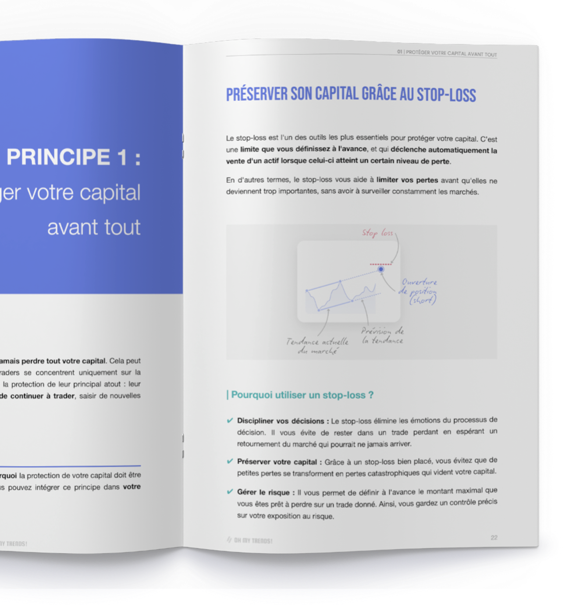

Vous entrez sans plan
Vous savez parfois pourquoi entrer, mais pas toujours combien risquer ni dans quelles conditions sortir.
Le workbook de money management pour trader particulier qui veut protéger son capital, structurer ses décisions et passer de l’intention à une routine concrète.
Accès numérique immédiat. Aucun résultat financier n’est garanti.

Sans règles de risque claires, une position mal dimensionnée ou une décision émotionnelle peut annuler plusieurs bonnes décisions.
Vous savez parfois pourquoi entrer, mais pas toujours combien risquer ni dans quelles conditions sortir.
Un stop déplacé, une position trop importante ou l’envie de se refaire transforme une petite perte en problème.
La peur, l’euphorie et le FOMO prennent la place de règles préparées à l’avance.
Une progression simple pour protéger votre capital avant de chercher à optimiser vos performances.
Poser vos premières règles de sécurité.
Savoir combien engager selon votre risque.
Remplacer l’improvisation par un cap mesurable.
Limiter les dégâts et éviter la revanche.
Filtrer les trades avant de les prendre.
Réduire votre exposition globale.
Reconnaître ce qui influence vos décisions.

Chaque partie vous aide à transformer une idée en règle de trading écrite, vérifiable et applicable à votre propre situation.
Explications, exemples et études de cas sur les 7 principes.
Des supports pour calculer, préparer et analyser vos trades.
Un modèle pour observer vos décisions plutôt que vos seules performances.
Pas de faux témoignages, pas de promesse spectaculaire : seulement une présentation honnête du contenu proposé.
Accédez au PDF et commencez par les règles qui correspondent à votre situation.
Le guide est un PDF lisible sur ordinateur, tablette et smartphone. Les fiches peuvent également être imprimées.
Non. Il s’agit d’un guide de money management et de discipline. Il ne fournit ni signaux ni recommandations d’achat ou de vente.
Oui. Les notions sont expliquées progressivement, avec des exemples, des exercices et des supports pratiques.
Le téléchargement sera disponible directement via le bouton. Le mode de diffusion peut évoluer dans le temps.
Non. Aucune garantie satisfait ou remboursé n’est proposée actuellement. Le contenu, le format et les limites du guide sont présentés clairement avant l’accès.
Non. Aucun contenu sérieux ne peut garantir un résultat sur les marchés financiers. Le guide porte sur la gestion du risque et la structuration des décisions.
Remplacez la valeur PDF_URL_A_REMPLACER dans la configuration JavaScript en bas de cette page par l’URL définitive du fichier.